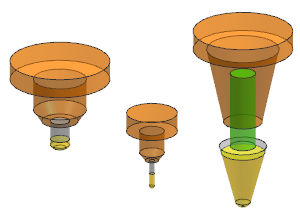

Open mnf16_85_export_tool.
The part geometry is hidden to make the tools easier to examine.
Open the Operation Navigator, and if necessary, change to the Machine Tool view.
In the navigator, select the tools one at a time.
For each tool selection that you make, both the tool and the holder are displayed.

Two of the tools are standard library tools. The tool named MILL-.25TD-.25R-15DEG is a custom tool, with a custom holder. To reuse this tool in other parts, you must export it to a tool library.
|
Note |
You must have write permission to the tool library to export a tool. |